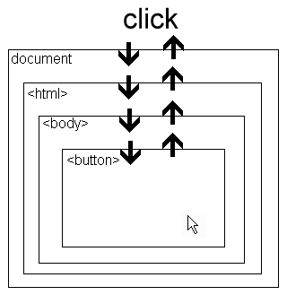

jQuery Spaghetti
Version sans gras
Le plus gros problème avec jQuery
Aucune organisation de code n'est proposée
Comment est-on introduit a jQuery?
Acceptable pour des petits sites web
Plus le temps avance..
Plus cette façon de travailler devient difficile
Quand Backbone, javascriptMVC, etc ne sont pas nécessaires?
En gros, quand votre framework back-end fait tout le "heavy lifting"
- Vos routes(url) ne sont pas gérées sur le front-end?
- Pas besoin de modèles sur le front-end?
- Vos views sont gérées back-end?
Ce qu'il reste, c'est la gestion d'événements, pourquoi se compliquer la vie?
Events
Delegate / Custom events
3 types d'event handler
- $().bind("click", fn)
Bindé directement sur l'object dans le DOM
- $().live("click", fn)
Bindé sur le document et utilise le bubbling
- $("table").delegate("td", "click", fn)
Bindé sur la table et utilise le bubbling pour accéder au td
- $().click(fn)
Shorhand de bind
Le bubbling (Event delegation), version courte
Quand un événement se produit, une réaction en chaine se produit dans le DOM
et il est possible de "catcher" l'événement sur tous les parents du node.

Pourquoi utiliser delegate()?
- Bind est lent à l'initialisation sur plusieurs node avec le même sélecteur
- Live n'offre aucun contexte
- Delegate offre un contexte et peut être très rapide
- Si on delete le node ou l'événement est bindé, le ménage est fait automatiquement pour nos events
Avoir un contexte c'est important
Delegate est très utile lorsqu'on l'utilise associé à un module ou une division de script
Custom Events, c'est quoi? ça sert à quoi?
- Découpler vos modules
- Moins de dépendance aux plugins
$(document).........
Les custom events de jQuery sont malheureusement associés au DOM, la plupart du temps ça ne sert absolument à rien.
Heureusement d'autres solutions existent..
Dites bonjour à PUB/SUB
- Sauvegarder dans un object
- N'est pas lié au DOM
- Beaucoup plus rapide
Petite note sur les collections jQuery..
Chaque fois que vous utiliser $() une nouvelle collection jQuery est créé, ce pourquoi il est préférable de la sauvegarder quand il y a plusieurs utilisations
Selector Traversing
.parent().parent().parent()
Bonjour closest("#myParentID")
closest vous permet de traverser les sélecteurs en toute securité.
Request Ajax
Un petit nouveau depuis 1.5, deferred
Deferred ajoute beaucoup de fonctionnalités aussi
-
deferred.always()
Add handlers to be called when the Deferred object is either resolved or rejected.
-
deferred.done()
Add handlers to be called when the Deferred object is resolved.
-
deferred.fail()
Add handlers to be called when the Deferred object is rejected.
-
deferred.isRejected()
Determine whether a Deferred object has been rejected.
-
deferred.isResolved()
Determine whether a Deferred object has been resolved.
-
deferred.pipe()
Utility method to filter and/or chain Deferreds.
-
deferred.promise()
Return a Deferred's Promise object.
-
deferred.reject()
Reject a Deferred object and call any failCallbacks with the given args.
-
deferred.rejectWith()
Reject a Deferred object and call any failCallbacks with the given context and args.
-
deferred.resolve()
Resolve a Deferred object and call any doneCallbacks with the given args.
-
deferred.resolveWith()
Resolve a Deferred object and call any doneCallbacks with the given context and args.
-
deferred.then()
Add handlers to be called when the Deferred object is resolved or rejected.
-
.promise()
Return a Promise object to observe when all actions of a certain type bound to the collection, queued or not, have finished.